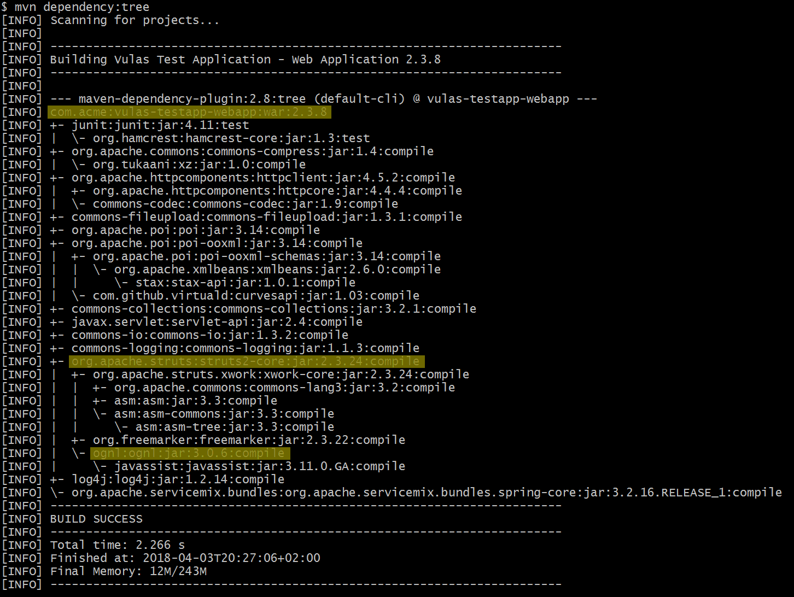

Assessment and Mitigation Manual¶
The presence of vulnerable open-source code must be assessed. If the vulnerability IS NOT considered exploitable, it can be exempted. If it IS considered exploitable, it has to be mitigated.
Assess¶
You can start to assess Eclipse Steady findings as soon as you ran the app analysis goal. Assessing means to clarify whether the respective vulnerability is exploitable in the given application context. The other analysis goals provide further evidence in regards to whether vulnerable code is executable, which is a prerequisite for being exploitable, but they do not bring up new findings.
A finding (table row) in the Vulnerabilities tab represents a tuple (library, vulnerability). Depending on whether the library contains the vulnerable or the fixed code, the column Inclusion of vulnerable code contains one of the following icons:
- Green exclamation mark: The library version in use contains the fixed code for the respective vulnerability, hence, is not affected. Such historical vulnerabilities do not need to be assessed and mitigated.
- Red exclamation mark: The library version in use contains the vulnerable code, hence, is affected by the respective vulnerability, and the finding requires assessment. A findings should be mitigated if considered exploitable (see below). A finding can be exempted if it is not considered exploitable.
- Orange Hourglass: It is unclear whether the library version in use contains the vulnerable or the fixed code. Hourglasses are resolved by the Eclipse Steady operations team (automatically or manually) by comparing the source or byte code of the library in question with the vulnerable and fixed code. Depending on whether the source or byte code of the library is available, e.g., in Maven Central or PyPi, this can take more or less time.
Static and Dynamic Analysis¶
The columns Static Analysis and Dynamic Analysis provide information whether vulnerable code can be potentially executed (according to static call graph construction and analysis), or whether its execution has been observed during the execution of tests.
Warning
You cannot simply ignore a vulnerability just because no red icon is shown. In other words: We suggest to always look at all vulnerabilities, regardless of whether there are indicators in those two columns.
The main reasons are:
-
Deserialization vulnerabilities, whose exploitation does not require that vulnerable code is executed during normal program execution, and
-
the fact that both static and dynamic analyses can also be subject to false-positives and false-negatives.
Dependency scope¶
Make sure to understand this important Maven concept, refer to the official documentation for details. Typically, TEST and PROVIDED dependencies are not bundled with your application. In other words, when you or your customers deploy the application, libraries in scope TEST and PROVIDED are not included, therefore, vulnerabilities in these dependencies are less critical for you than those in other scopes (the party operating the platform should address them).
Direct vs. transitive dependencies¶
You need to assess vulnerabilities regardless of whether they concern direct or transitive dependencies. The reason is that the exploitability of a vulnerability is independent of this aspect.
CVSS score¶
All vulnerabilities shall be assessed, no matter the CVSS score. The severity of open-source vulnerabilities significantly depends on the application-specific context (in which the open-source component is used). Thus, the actual severity can differ significantly from the (context-independent) CVSS base score provided by 3rd parties such as the Mitre/NVD.
Exempt¶
If vulnerable code is NOT considered exploitable in a given application context, the respective finding (or an entire scope) can be exempted. This can be done by specifying additional configuration settings, preferably in a dedicated properties file (e.g., vulas-exemptions.properties). Keeping exemptions in a dedicated file avoids the risk of making accidental changes to other settings. Storing such a dedicated file in the source code repository of the application under analysis, thus making the file subject to version control, has the advantage of tracking modifications in terms of date and author.
The settings required to create exemptions are described in the section report goal.
Mitigate¶
If vulnerable code is considered exploitable in a given application context, there are several ways to fix the dependency on the vulnerable open-source component:
Remove dependency (ideal)¶
If possible, removing a dependency from your application is the ideal solution. It will not only avoid the dependency on a given library with known vulnerabilities but also reduce (a) the size of your application's deployable artifact and (b) the application's attack surface.
The analysis goals a2c, test and t2c can support you in assessing whether or not the removal is possible at all. Running those goals will populate the 2 right-most columns of the table in the Dependencies tab, hence, you will see whether library constructs are potentially executable or actually executed.
- Direct dependencies can be removed by deleting the respective
<dependency>section. - Transitive dependencies can be removed by adding an
<exclusions>section to the respective direct<dependency>(s), cf. Dependency Exclusions for more details.
Update dependency (default)¶
An update is the default solution for fixing a dependency with known-vulnerabilities. It is possible for the majority of vulnerabilities in the Eclipse Steady Vulnerability Database.
- Direct dependencies can be updated by declaring a non-vulnerable version in the respective
<dependency>section. - Transitive dependencies can be updated by two means:
- Preferably, by updating the direct
<dependency>that is responsible for pulling the vulnerable transitive dependency into your project. Usemvn dependency:treeor the IDE of your choice to identify this to-be-updated direct dependency (cf. screenshot, where the transitive dependency ognl:3.0.6 is pulled in through the direct dependency struts2-core:2.3.24 into the application vulas-testapp-webapp:2.3.8). - If there's no updated version of the direct dependency available that solves the problem, you need to declare a direct
<dependency>on a non-vulnerable version. This will override the version resulting from the use of the direct dependency. However, as this solution breaks the transparency of the dependency resolution mechanism, it is advisable to add a corresponding comment to yourpom.xmlorbuild.gradleand revisit the dependency every now and then.
- Preferably, by updating the direct

Sometimes, the vulnerable dependency is pulled into your project through a component developed by colleagues. In this case, please ask your colleagues to provide a fixed version that avoids pulling in vulnerable open-source. Like this, every other user of the respective component will be able to solve the problem by a simple update.
Fixing the library (exceptional)¶
Best practice
This should only be done if the removal or update of the dependency is not possible.
Fixing the library means to create a fix for the vulnerability within the source code of the open-source library, which requires a deep understanding of the respective library and vulnerability.
If you take that road, make sure to create a pull request so that the original open-source developers check and integrate the fix in the standard. If not, you will need to maintain your fix in the forked version of the library, and any further enhancements of the library will need to be merged into this fork.
Special case: Uber JARs
So-called Uber JARs are one example where the removal or update of a vulnerable dependency is not easily possible. Such Java archives do not only contain the Java classes of the respective component, but also contain (rebundle) the Java classes of its dependencies. Uber JARs enable the distribution of self-contained "all-in-one" Java archives.
In order to fix such Uber JARs, one has to clone the source code repository of the respective open source component, fix the version of the dependency whose classes will be included in the Uber JAR, and build the component in order to produce a new, fixed Uber JAR of the component containing the non-vulnerable classes of its dependency.
Example: The Java component org.springframework.cloud:spring-cloud-cloudfoundry-connector rebundles jackson-databind. In case the latest version of spring-cloud-cloudfoundry-connector contains a vulnerable version of jackson-databind, one has to clone https://github.com/spring-cloud/spring-cloud-connectors/tree/master/spring-cloud-cloudfoundry-connector, edit build.gradle in order to update the version of jackson-databind, and build a fixed Uber JAR to be used by the application.
Important:
- If you create a fix yourself, make sure to contribute such fixes to the original open source project.
Fixing the application (exceptional)¶
Best practice
This should only be done if the removal or update of the dependency is not possible.
Fixing the applications means to introduce a security control in the application that mitigates a problem in a vulnerable library, which requires a deep understanding of the respective vulnerability.
Example: Suppose the library in question is vulnerable to XXE processing. If the developers of the respective library do not (cannot) provide a fix, you could introduce a corresponding sanity check in your application, just before XML documents are handed-over to the library.
The analysis goals a2c, test and t2c can support you in identifying the application methods that require a safeguard. Ideally, you can see (a subset of) the execution paths that lead from application code to vulnerable library code. See here to learn about the configuration options of the reachability analyses a2c and t2c.